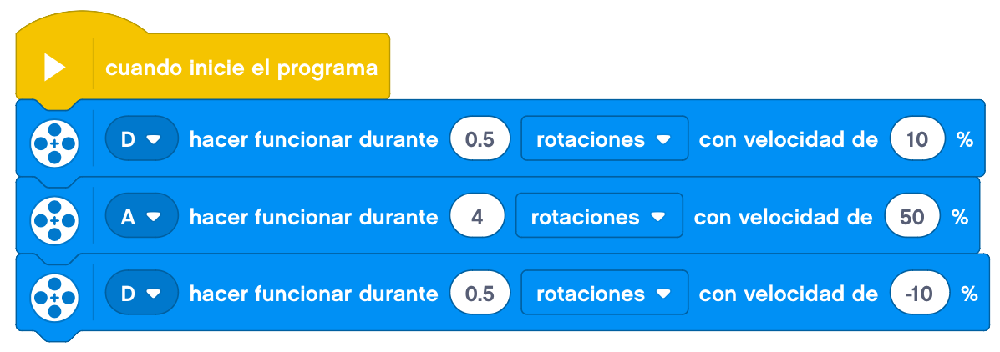

En este tema construiremos un martillo hidráulico unido a una estructura tipo excavadora.

Este martillo hidráulico constará de un motor que suba y baje el martillo y otra parte que será la que haga
de percutor.
Un ejemplo de construcción del martillo hidráulico puede ser el siguiente.

Le añadimos el cableado y tendremos el martillo hidráulico terminado.
El movimiento del martillo lo podemos realizar con la aplicación Comander donde manejaremos por un lado el
movimiento del motor que mueve la estructura y por otro el percutor.
Si lo hiciéramos con la programación, la haríamos para hacer subir y bajar el martillo y al estar abajo
accionar el percutor.
Podría quedar de la siguiente forma.

Nuestro proyecto terminado funcionaría así.